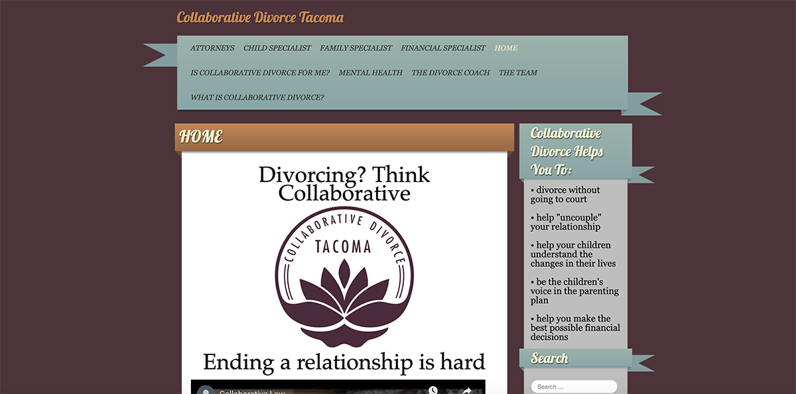

Collaborative Divorce Tacoma
Case Study

The Challenge
When I found myself in the position of having to search for a divorce attorney, I frequently despaired over the frustrating user experience offered by so many divorce-related websites.
This is a complex statement though. First of all, it’s an acknowledgment of where my head was at that time: studies show that the brain undergoes radical changes during a marriage break-up, disrupting many cognitive functions like attention and memory. It’s also an acknowledgment of the difficult task faced by anyone in the field of divorce: it’s uniformly seen as negative, and no one wants to talk or think about it until you’re forced to do so. But this is also a plea for good design and taking the needs of a website’s users into consideration. The fact that I was frustrated to the point of tears while perusing divorce-related websites does say something about the fact that I was miserable over getting divorced, but I was also a typical user in ways that could not only be anticipated, but solved by those who create the website.
The overall goal of a site like this is to inspire confidence - not only in a specific attorney, but in the divorce process itself, as well as in the future. If the design and organizational decisions support that goal, users can come away with a useful, even positive, experience with a divorce website that, in turn, sets them up for success in the future.
Hope for the future, to put it candidly, seems in short supply when you've just decided to divorce. A few divorce websites I encountered seemed to avoid information in favor of cliches. Others, trying to be more realistic I suppose, presented as really drab, or highly impersonal. Yet, none of these approaches make you believe that you’re putting yourself in understanding, competent hands.
I remember being so chagrined when I encountered this particular site that I vowed to myself I’d improve it one day, as a sort of public service. This is a concept project, a sort of primer on how to construct a solid user experience, and - who knows - perhaps creating it was another step on my own path to further healing.
Here are some of the challenges to improve upon:
- A disorganized navigation that contains too many categories, which were also labeled in industry-specific lingo (what is the difference between a Child Specialist and a Family Specialist, for example?). This is confusing for anyone, and for soon-to-be-Unmarried folks with compromised cognitive function, it could be completely overwhelming, leading them to abandon the website. The nav, which is a gateway to the rest of the site, and should be an important organizational point, is also oddly obscured by a strange “layover” effect.
- Very little explanation is offered as to what Collaborative Divorce actually means.
- Outdated website with regards to color, decorative flourishes, and placement of elements like the logo do not inspire confidence that this organization is at the forefront of their field.
The Solution
- I thoroughly answered visitors’ main question right away - What is Collaborative Divorce? - through a quote in the hero image, as well as organized bullet points and text, which were laid out succinctly, in an easy-to-follow format.
- I streamlined the nav bar to a minimal number of clear and relevant categories, in order to guide users through the site.
- I used color, which has scientifically proven physiological effects on the brain and body, in a savvy way. Bright, saturated colors, starting right away with the hero image, elevate the mood. Employing a variety of colors - in the revamped logo, in the hero image, and in the organized text boxes - visually communicates activity, and by extension, change. The harmonious color palette suggests a hopefulness, too.
- I used visual principles to visually communicate ideas about cooperation. For example, fusing different fonts and colors in the headline text, and formatting the text around the balloon in the “hero” image subtly bends expectations of how text usually appears. This visually suggests an experience that will be different, though not jarring, and hints at the cooperation and good intentions that are a part of the Collaborative Divorce model.
- Extensive copywriting was necessary to flesh out and organize the text, along with photo editing to create a more updated, professional look (uniform sizes for headshots, for example, presented in an easy-to-see format).
Basically, I created the site I wish I’d had when I needed it, one that deals clearly in facts, balanced with hope, that acknowledges the changes that are underway, instills confidence that the organization knows how to guide me, and provides reassurance that things will be OK (eventually).
PS: It's now "eventually", and things are very OK!